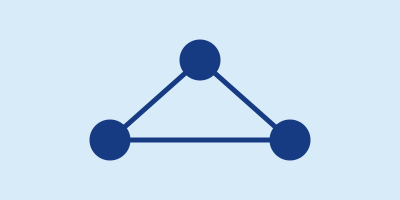

Rede
Configuração de redes
Instalação e ajuste de roteadores, switches e pontos de Wi-Fi.
Solicitar atendimento →Conectividade, segurança e suporte técnico
A Central de Serviços de Rede atende laboratórios, salas e setores com configuração, suporte, segurança e monitoramento da infraestrutura.

Rede
Instalação e ajuste de roteadores, switches e pontos de Wi-Fi.
Solicitar atendimento →Suporte
Atendimento para computadores, impressoras e acesso à internet.
Solicitar atendimento →Segurança
Atualização de antivírus, controle de acesso e proteção de dados.
Solicitar atendimento →Monitoramento
Acompanhamento da disponibilidade e do desempenho da rede.
Solicitar atendimento →